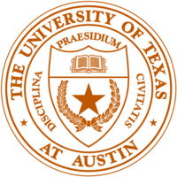

I was born and raised in Waco, Texas to Clifton and Kelly Karnei. I grew up with 2 older siblings, playing little league sports and running around with my neighborhood friends. I enjoyed playing video games which sparked my curiosity towards technology, an interest that would continue to grow as I did. I attended Midway High School where I played Golf and Football, making Varsity on the latter team. During my High School years I took two intro-to-engineering classes with a great professor, and I simply loved it. We learned fascinating things and then applied them in awesome ways. It was from these classes that I came to realize what I wanted to study in college. By this time, I had built my own PC and it had become very clear to me that computers would only continue to become more and more relevant as time goes on. This interest in computers along with my technical prowess led me to decide to major in Electrical Engineering. I was fortunate enough to have just such an opportunity at The University of Texas at Austin .
I was born and raised in Waco, Texas to Clifton and Kelly Karnei. I grew up with 2 older siblings, playing little league sports and running around with my neighborhood friends. I enjoyed playing video games which sparked my curiosity towards technology, an interest that would continue to grow as I did. I attended Midway High School where I played Golf and Football, making Varsity on the latter team. During my High School years I took two intro-to-engineering classes with a great professor, and I simply loved it. We learned fascinating things and then applied them in awesome ways. It was from these classes that I came to realize what I wanted to study in college. By this time, I had built my own PC and it had become very clear to me that computers would only continue to become more and more relevant as time goes on. This interest in computers along with my technical prowess led me to decide to major in Electrical Engineering. I was fortunate enough to have just such an opportunity at The University of Texas at Austin .
At UT, I spent the first year adjusting to the college environment and also joined the UT Waterski Team. My first summer in college I spent on a study abroad Trip in Milan, Italy. Many of the photos on my photography page come from my trip there. I continued in my major, learning the basics of both circuit and digital logic design. My second summer I spent doing the McComb's Summer Institute, an intensive nine-week, fifteen hour program that afforded me a Business Minor. During my third year, I learned much more about software design but began to feel that wasn't the area I wanted my education to culminate in. I had always had a strong interest in Artificial Intelligence and Machine Learning, and had now found myself in a prime position to explore it further. The following summer, I was able to secure an internship at MindMesh Tech Inc. where I found myself both testing their software and performing linear regression to predict the lifetime of drilling tools. Although I didn't yet have any formal schooling on the subject, I absolutely loved it and registered for data science the very next semester.
Reinvigorated in my schooling, I began the year with one of my best semesters to date. I made all As while taking three classes related to machine learning; one of which was a graduate level course. While learning more about the field, I came to understand that having a Masters degree would be a huge boon. I am now enrolled in the Integrated Masters program at UT which will allow me to receive my Masters with only one extra year of schooling. Having now completed several machine learning projects in classes, I've never been more convinced about what I want to do with my life and career. I hope to see a great many breakthrough in this field during my lifetime. We already generate more data than we know what to do with, and we will only continue to generate it in higher and higher volumes. I aim to use my knowledge and skill set to do exciting and innovative things with the veritable ocean of information we will (and already do!) collect.